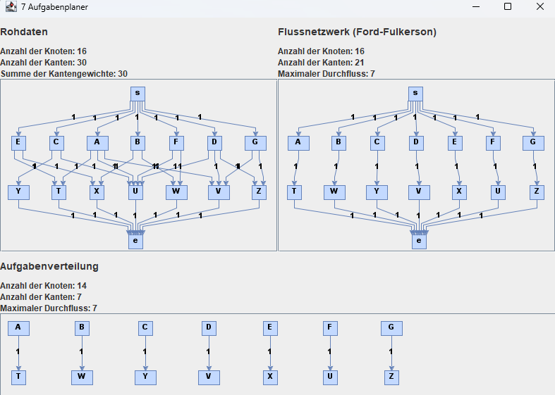

Problem 7 - "Es gibt viel zu tun! Wer macht's"
Während die Bürger der Stadt Schilda ganz begeistert von Ihnen sind, bekommen Sie immer mehr Aufträge, die Sie gar nicht mehr alleine bewältigen können. Sie stellen also neues Personal für die Projektleitung ein. Jeder Mitarbeiter hat unterschiedliche Kompetenzen und Sie wollen die Mitarbeiter so auf die Projekte verteilen, dass jedes Projekt von genau einem Mitarbeiter oder einer Mitarbeiterin mit den notwendigen Kompetenzen geleitet wird.
Wie ordnen Sie die Mitarbeiter den Projekten zu? (Genau ein Mitarbeiter pro Projekt) (Auch diesen Algorithmus integrieren Sie in Ihr Tool – schließlich möchte auch die Graphschaft ihre Kräfte gut einsetzen!)
Modellierung des Problems
Das Problem lässt sich als Graphenmodell mit gerichteten Kanten darstellen. Die Mitarbeiter und Kompetenzen werden als Knoten dargestellt. Die Fähigkeit eines Mitarbeiters eine bestimmte Kompetenz zu besitzen wird als Kante dargestellt. Die Kanten werden mit der Kapazität 1 versehen.
Um den Graph zu modellieren werden die Java-Bibliotheken JGraphT und JGraphX verwendet. Mit JGraphT wird der Graph als Datenstruktur modelliert. Mit JGraphX wird der Graph als Grafik dargestellt und auf dem Bildschirm dargestellt.
Die Eingabe
Die Buchstaben für die Mitarbeiter werden mit A - G bezeichnet und die Kompetenzen mit T - Z. Hierbei ist es wichtig anzumerken, dass die Anzahl der Mitarbeiter gleich der Anzahl der Kompetenzen sein muss und Jede Kompetenz von mindestens einem Mitarbeiter besetzt sein muss.
Die Eingabe besteht aus einem Graphen, der aus Kanten und Knoten besteht. Diese werden aus einer .txt Datei gelesen und in eine Instanz der Klasse AdjazenzMatrix.java geladen. Diese Instanz dient als Basis für die Berechnung des minimalen Spannbaums.
Die Ausgabe
Die Ausgabe wird als Graph in einem Fenster dargestellt und in die Datei 7 Aufgabenplaner.txt geschrieben. Das Fenster besteht aus drei Teilen. Im oberen linken Teil wird der Eingabe-Graph mit zusätzlichen Start- und Endknoten dargestellt. Im oberen rechten Teil wird der Ausgabe-Graph mit Start- und Endknoten dargestellt. Im unteren Teil wird die resultierende Aufgabenverteilung ausgegeben.
Vor der Ausgabe werden die inversen/negativen Kanten, Startknoten, Endknoten und deren Kanten entfernt. Diese werden nicht benötigt, da sie keine Rolle spielen.
Ein korrekte Ausgabe erfüllt folgende Eigenschaften:
-
Es müssen alle Kompetenzen und Mitarbeiter in der Ausgabe vorkommen.
-
Jeder Mitarbeiter muss genau eine Kompetenz besitzen.
-
Es darf keine Kante geben, die von einem Mitarbeiter zu einem anderen Mitarbeiter führt.
-
Es darf keine Kante geben, die von einer Kompetenz zu einer anderen Kompetenz führt.
-
Es darf keine Kante geben, die von einer Kompetenz zu einem Mitarbeiter führt.
-
Alle Kanten müssen gerichtet und ungewichtet sein, also müssen den Fluss 1 besitzen

Resultierende Aufgabenverteilung
Geeignete Algorithmen
Es gibt verschiedene Algorithmen, die verwendet werden können, um den maximalen Fluss in einem gerichteten Graph zu berechnen. Einige dieser Algorithmen sind:
Ford-Fulkerson-Algorithmus: Dieser Algorithmus ist ein iterativer Algorithmus, der in jedem Schritt den Fluss durch einen Pfad erhöht, der vom Quellknoten zum Zielknoten führt und dessen Kapazität noch nicht vollständig ausgeschöpft ist. Der Algorithmus endet, wenn kein solcher Pfad mehr existiert.
Dinic-Algorithmus: Dieser Algorithmus ist ebenfalls ein iterativer Algorithmus, der den Fluss durch den Graph in jedem Schritt erhöht, indem er einen Pfad vom Quellknoten zum Zielknoten sucht, dessen Kapazität noch nicht vollständig ausgeschöpft ist. Im Gegensatz zum Ford-Fulkerson-Algorithmus verwendet der Dinic-Algorithmus jedoch eine Heuristik, um schneller zum Ergebnis zu gelangen.
Edmonds-Karp-Algorithmus: Dieser Algorithmus ist eine Variation des Ford-Fulkerson-Algorithmus und verwendet auch eine Heuristik, um schneller zum Ergebnis zu gelangen. Im Gegensatz zum Dinic-Algorithmus verwendet der Edmonds-Karp-Algorithmus jedoch eine Breitensuche statt einer Tiefensuche, um Pfade im Graph zu finden.
Preflow-Push-Algorithmus: Dieser Algorithmus ist ein schneller, parallelisierbarer Algorithmus, der den Fluss durch den Graph in jedem Schritt erhöht, indem er einen Pfad vom Quellknoten zum Zielknoten sucht, dessen Kapazität noch nicht vollständig ausgeschöpft ist. Im Gegensatz zu den anderen Algorithmen, die hier aufgeführt sind, ist der Preflow-Push-Algorithmus jedoch nicht iterativ, sondern arbeitet in einem einzelnen Durchgang.
Die Laufzeit des Algorithmus
Zuerst wird aus der Eingabematrix eine neue Matrix erstellt, die einen zusätzlichen Start- und Endknoten enthält. Für jeden Knoten aus der ersten Hälfte der Knoten wird eine Kante vom Startknoten zu diesem Knoten hinzugefügt. Das gleiche wird umgekehrt für die zweite Hälfte der Knoten mit dem Endknoten gemacht. Die Laufzeit hierfür beträgt O(V^2).
Die Laufzeit der Funktion bfs() ist O(V + E). In jedem Schritt wird ein Knoten aus der Warteschlange entfernt und die Nachbarknoten des Knotens werden in die Warteschlange aufgenommen. Da jeder Knoten nur einmal in die Warteschlange aufgenommen wird und jede Kante nur einmal betrachtet wird, beträgt die Laufzeit O(V + E).
Die Laufzeit des Ford-Fulkerson-Algorithmus ist O(V * E^2). Der Algorithmus wird in jedem Schritt iterativ ausgeführt, bis kein Pfad mehr vom Quellknoten zum Zielknoten verfügbar ist, der dessen Kapazität noch nicht vollständig ausgeschöpft hat. In jedem Schritt wird eine Breitensuche ausgeführt, um einen solchen Pfad zu finden.
Da am Ende der fordFulkerson(int[][] matrix) Funktion noch eine Ausgabematrix erzeugt wird erhöht sich die Laufzeit um O(V^2). Mit der gleichen Laufzeit werden zusätzlich noch die inversen Kanten des Graphen entfernt.
Nachdem die inversen Kanten entfernt wurden, wird eine neue Ausgabematrix ohne Start- und Endknoten und ohne deren Kanten erstellt. Die Laufzeit hierfür beträgt O(V^2).
Daraus folgt eine Laufzeit von O(V * E^2 + V^2).
Die Implementierung des Algorithmus
Zur Lösung des Problems wurde der Ford-Fulkerson-Algorithmus verwendet. Genauer gesagt wurde der Edmonds-Karp-Algorithmus verwendet, da dieser eine Breitensuche verwendet, um Pfade im Graph zu finden.
Zuerst wird aus der Eingabematrix eine neue Matrix erstellt, die einen zusätzlichen Start- und Endknoten enthält. Für jeden Knoten aus der ersten Hälfte der Knoten wird eine Kante vom Startknoten zu diesem Knoten hinzugefügt. Das gleiche wird umgekehrt für die zweite Hälfte der Knoten mit dem Endknoten gemacht.
Danach wird die Matrix matrix in eine echte Kopie output kopiert. Die echte Kopie wird später als Ausgabe verwendet.
Danach wird ein Eltern-Array parent erstellt, das die Elternknoten der Knoten im Graph speichert. Dieses Array wird später verwendet, um den Pfad vom Quellknoten zum Zielknoten zu finden.
Als nächstes wird eine Breitensuche ausgeführt, um einen Pfad vom Quellknoten zum Zielknoten zu finden, dessen Kapazität noch nicht vollständig ausgeschöpft ist. Die Breitensuche wird durch die Funktion bfs() ausgeführt. Die Funktion bfs() gibt true zurück, wenn ein Pfad gefunden wurde, der vom Quellknoten zum Zielknoten führt und dessen Kapazität noch nicht vollständig ausgeschöpft ist. Andernfalls wird false zurückgegeben.
Als Datenstruktur der bfs() Funktion wird eine LinkedList verwendet. Die Laufzeit der poll() Funktion beträgt O(1), da die LinkedList eine doppelt verkettete Liste ist. Die Laufzeit der add() Funktion beträgt ebenfalls O(1), da die LinkedList eine doppelt verkettete Liste ist.
Wenn ein solcher Pfad gefunden wurde, wird der minimale Fluss des Pfades berechnet. Der minimale Fluss des Pfades ist die kleinste Kapazität, die noch nicht vollständig ausgeschöpft ist. Dieser Wert wird dann zum maximalen Fluss des Graphen addiert.
Anschließend wird eine neue Ausgabematrix erstellt, die nur aus dem positiven Fluss des Graphen besteht.
Zuletzt wird eine neue Ausgabematrix ohne Start- und Endknoten und deren Kanten erstellt. Diese Matrix wird dann als Ausgabe angezeigt und in eine Datei gespeichert.
1 2 3 4 5 6 7 8 9 10 11 12 13 14 15 16 17 18 19 20 21 22 23 24 25 26 27 28 29 30 31 32 33 34 35 36 37 38 39 40 41 42 43 44 45 46 47 48 49 50 51 52 53 54 55 56 57 58 59 60 61 62 63 64 65 66 67 68 69 70 71 72 73 74 75 76 77 78 79 80 81 82 83 84 85 86 87 88 89 90 91 92 93 94 95 96 97 98 99 100 101 102 103 104 105 106 107 108 | |